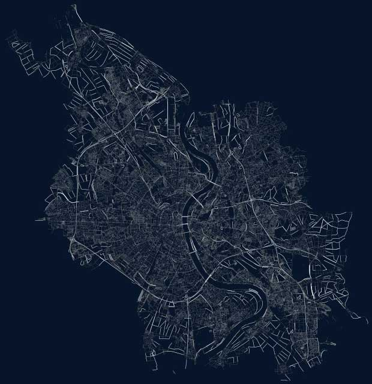

Sehen wir uns an, wie wir mit Python und OpenStreetMap-Daten schöne Karten erstellen können.
18 April 2024 | Programmierung, Datenbearbeitung, VisualisierungAls erstes brauchen wir Python und einen Workflow. Ich werde Conda verwenden, um den Workflow zu erstellen, der Code-Editor ist Spyder oder VSCode. Wir werden auch das Python-Paket OSMnx benutzen, mit dem wir Geodaten von OpenStreetMap laden können.
Das OSMNX Python-Paket wurde von Jeff Boeing geschrieben und kann zum Abrufen, Modellieren, Analysieren und Visualisieren von Straßennetzen und anderen räumlichen Daten aus OpenStreetMap verwendet werden. Die Benutzer können städtische Netze, die für Fußgänger, Autos oder Radfahrer geeignet sind, mit einer einzigen Zeile Python-Code herunterladen und modellieren und sie dann leicht analysieren und visualisieren. Genauso einfach können Sie mit städtischen Einrichtungen/Punkten von Interesse, Gebäudegrundrissen, Haltestellen, Höhendaten, Straßenausrichtungen, Geschwindigkeit/Reisezeit und Routenführung arbeiten.
Nach der erfolgreichen Installation von OSMnx können wir mit der Programmierung beginnen. Für unsere Aufgabe müssen wir noch 2 weitere Pakete importieren - geopy.geocoders und PIL, aber dazu komme ich später. Als erstes müssen wir die Daten herunterladen. Es gibt viele Möglichkeiten, dies zu tun, eine der einfachsten ist die Verwendung der graph_from_place() Methode.
graph_from_place() benötigt ein paar Parameter. place ist die Abfrage, die OpenStreetMaps verwendet, um die Daten des angegebenen Ortes abzurufen, retain_all gibt alle Straßen zurück, auch wenn sie nicht mit anderen Elementen verbunden sind, simplify bereinigt den bereitgestellten Graphen ein wenig, und network_type gibt an, welche Art von Straßennetz abgerufen werden soll.
Ich möchte alle möglichen Daten erhalten (network_type='all'), aber man kann nur Fahrbahnen mit 'drive' oder Fußwege mit 'walk' laden.
Eine andere Möglichkeit, die Daten zu laden, ist die Verwendung von graph_from_point(), mit der wir Koordinaten angeben können. In manchen Fällen ist diese Option bequemer, z. B. bei Orten mit ähnlichen Namen, und bietet eine höhere Genauigkeit. Mit 'dist' können wir nur die Knoten speichern, die sich innerhalb der angegebenen Grenzen vom Zentrum des Graphs befinden.
Wir müssen bedenken, dass wir, wenn wir Daten aus großen Städten wie Madrid oder Berlin herunterladen wollen, ein wenig warten müssen, um alle Informationen zu erhalten. Es hängt auch davon ab, welche Entfernung für die Kartenausschnitte gewählt wird.
point = (52.5170365, 13.3888599)
G = ox.graph_from_point(point, dist=15000, retain_all=True, simplify = True, network_type='all')Man kann auch einen benutzerdefinierten Filter verwenden - einen Filter, der anstelle des voreingestellten network_type verwendet wird und die Art des gewünschten Stadtnetzes angibt, z. B. Kanalnetz - ["waterway"~"canal"]', Metronetz - ["railway"~"subway"] oder ["highway"~"motorway|motorway_link|trunk|trunk_link"]', um Autobahnen, Schnellstraßen und ihre Verbindungen zu erhalten.
Sowohl graph_from_place() als auch graph_from_point() geben einen MultiDiGraph zurück, den wir auspacken und in die Liste einfügen können. Jetzt müssen wir sie nur noch anzeigen, einfärben und die Breite der Linien an die Länge der Verkehrsnetzabschnitte anpassen.
fig, ax = ox.plot_graph(Groads, node_size=0,figsize=(8, 8),
dpi = 300,bgcolor = bgcolor,
save = True, edge_color=roadColors,
edge_linewidth=roadWidths, edge_alpha=1,
filepath="data/" + city + ".png", close=True)Danach zeichnen wir die Karte mit dem Modul ox.plot_graph. Wir fügen eine Hintergrundfarbe und optional einen Kartenrand mit bbox border hinzu, der standardmäßig undefiniert ist. Bounding Box oder Der Rand hat die Weltseitenform (Norden, Süden, Osten, Westen). Wenn keine, wird aus den räumlichen Ausdehnungen der gezeichneten Geometrien berechnet. Das heißt, in unserem Fall durch die Koordinaten einer Adresse oder eines Ortes, und alles, was sich auf die räumliche Geometrie dieses Ortes bezieht, wird in die Karte aufgenommen.
Vollständige unbeschriftete Karte von Köln

Die Karte ist fertig, aber was ist eine Karte ohne einen Namen? Wir könnten ihn in einem Grafikeditor wie Photoshop, Raw Therapee oder Gimp schreiben, aber wir suchen nicht nach einfachen Wegen und werden alles direkt hier machen, denn es gibt viele Bibliotheken für Python, die uns gerne helfen. Für unsere Aufgabe benötigen wir 2 weitere Pakete - geopy.geocoders und PIL , die ich schon am Anfang erwähnt habe.
Die erste ist für die Geo-Location eines Ortes oder einer Adresse erforderlich, um den vollständigen geografischen Namen (falls vorhanden) und seine Koordinaten zu erhalten.
Namen des Ortes werden wir später abschneiden und nur Paris Frankreich stehen lassen (obwohl wir natürlich alles schreiben können), und die Koordinaten in dieser Form werden für ihre weitere Umwandlung in das DMS-Koordinatensystem (Degrees/Minutes/Seconds) benötigt, das auf der Karte gut aussieht. Latitude und Longitude Koordinaten 48.8534951 2.3483915 wandeln sich zu 48°51′ N / 2°20′ E
Dazu müssen wir eine Funktion schreiben, die Lon/Lat in DMS umwandelt. Wir suchen nach einer Umrechnungsformel, finden sie und finden parallel dazu in dem Buch Learning Scientific Programming with Python eine hervorragende Lösung für unser Problem. Wir müssen sie für uns noch ein wenig verfeinern und los geht's!
def deg_to_dms(deg, pretty_print=None):
#Convert from decimal degrees to degrees, minutes, seconds.
m, s = divmod(abs(deg)*3600, 60)
d, m = divmod(m, 60)
if deg < 0:
d = -d
d, m = int(d), int(m)
if pretty_print:
if pretty_print=='latitude':
hemi = 'N' if d>=0 else 'S'
elif pretty_print=='longitude':
hemi = 'E' if d>=0 else 'W'
else:
hemi = '?'
return '{d:d}°{m:d}′ {hemi:1s}'.format(
d=abs(d), m=m, hemi=hemi)
return d, m, s
#Take the lat/lon from the place name to convert to dms coordinates
geolocator = Nominatim(user_agent="degdms")
location = geolocator.geocode(city, language="en")
# Convert lat/lon to dms coordinates
lat = deg_to_dms(location.latitude, pretty_print='latitude')
lon = deg_to_dms(location.longitude, pretty_print='longitude')
coords = f"{lat} / {lon}"Die zweite Bibliothek zum Drucken von Text auf ein Bild. Dafür brauchen wir ttf-Fonts, ich habe sie von hier ( CaviarDreams , BerlinSmallCaps ) heruntergeladen, und dann mit ihnen und dem Bild experimentieren, um alles schön zu machen, obwohl der Begriff der Schönheit für jeden anders ist :)
#Take the name of the place and country from the geoaddress to write it on the image
firstWord, * middle, lastWord = location.address.split()
fontsize = 240
font = ImageFont.truetype("m:\\projekte\\Fonts\\CaviarDreams.ttf", size=fontsize)
font_dms = ImageFont.truetype("m:\\projekte\\Fonts\\BerlinSmallCaps.ttf", size=int(fontsize/3))
font_countryName = ImageFont.truetype("m:\\projekte\\Fonts\\BerlinSmallCaps.ttf", size=int(fontsize/2))Überlagerung des Standortnames und der Koordinaten auf der Karte
with Image.open("data/" + city + ".png").convert("RGBA") as im_base:
#Make image with the same size as original to compose them later together
im_txt = Image.new("RGBA", im_base.size, (255, 255, 255, 0))
draw_text = ImageDraw.Draw(im_txt)
picWidth, picHeight = im_txt.size
# Calculate the size of the inscription relative to the image for correct positioning
wordLenghtInPixels = draw_text.textlength(city.upper(), font)
word_dms = draw_text.textlength(coords, font_dms)
word_country = draw_text.textlength(lastWord, font_countryName)
# Writing the inscriptions
draw_text.text((picWidth/2, picHeight /4), city.upper(), fill="#ffffff99", anchor="ms", font=font)
draw_text.text((picWidth/2, ((picHeight /4) - fontsize + 10)), coords, fill="#ffffff80", anchor="ms", font=font_dms)
draw_text.text((picWidth/2, ((picHeight /4) + fontsize / 2 + 20)), lastWord, fill="#ffffff80", anchor="ms", font=font_countryName)
#compose and display the final image
out = Image.alpha_composite(im_base, im_txt)
# out.show()
out.save("city of " + city + ".png" )Man wählt die Schriftarten aus, spielt mit ihrer Größe, Farbe und Transparenz, richtet sie in der Mitte oder am Rand des Bildes aus (in meinem Fall in der Mitte) und voila, unsere Karte mit unserer Beschriftung ist fertig. Wir können sie auf einem Datenträger speichern, ausdrucken und in einem Rahmen an die Wand hängen (dafür müssen wir ein großes Format statt figsize=(8, 8) - figsize=(27, 40) für den Druck der Karte wählen, und da es sich um ein Vektorbild handelt, können Sie es ohne Qualitätsverlust einfach groß machen).
Früher hieß der letzte Menüpunkt - Viola!, aber jetzt nur noch Erste Version, da beschlossen wurde, alles neu zu machen, und ich werde Ihnen jetzt sagen, warum.
Ich kam auf dieses Projekt zurück, weil ich dachte, es wäre schön, auch Gewässer oder vielmehr Wasserflächen zu visualisieren, da die Karte ohne sie sehr seltsam aussieht, zumal die Daten dazu in OSM verfügbar sind. Und als ich anfing, mich mit diesem Thema zu befassen, beschloss ich, alles neu zu machen, da die Visualisierung von Straßen rein schematisch implementiert war, obwohl sie für die erste Version im Allgemeinen nicht schlecht war. Ein und dieselbe Straße konnte unterschiedliche Linienstärken und farben haben, weil Länge und Farbe auf der Grundlage der Länge der Koordinatensegmente ein und derselben Straße berechnet wurden, nicht auf ihrem Zweck oder gesamten Teil. Das heißt, wenn eine Straße von A nach B als "Fußgängerzone" oder "Autobahn" bezeichnet wird, sollte sie zur Visualisierung die gleiche Linienstärke und Farbe haben.
Bei der Arbeit mit Wasseroberflächen hat sich herausgestellt, dass sie meist aus vielen Polygonen und nicht aus einem einzigen Multipolygon bestehen. Wenn man also eine Wasserfläche betrachtet, besteht sie bei der Visualisierung aus Polygonen und man kann die Grenzen jedes einzelnen Polygons sehen. Meiner Meinung nach sieht das ästhetisch nicht sehr ansprechend aus.
Es wurde beschlossen, alle Wasserflächen zu einem Multipolygon zu verschmelzen, so dass diese Grenzen nicht mehr sichtbar sind. Ich werde Ihnen nun ein Beispiel zeigen.
Teil der Spree in Berlin. Hier können Sie deutlich sehen, was ich meine. Hier wird der Flussabschnitt aus Polygonen gebildet.
Und hier ist ein Multipolygon
Ich habe auch ein Textmenü implementiert, in dem man auswählen kann, was man auf der Karte darstellen möchte - Gebäude, Straßen, Wasser, Eisenbahnverbindungen, d.h. wenn man möchte, kann man nur Straßen und Wasser oder nur Gebäude usw. darstellen, und man kann das Menü auch verwenden, um eine geeignete Farbpalette auszuwählen.
So wurde fast der gesamte Code umgeschrieben, und jetzt ist es möglich, Wasserflächen, Gebäude und Eisenbahninfrastruktur in die Karte einzufügen, verschiedene Paletten für die Visualisierung zu verwenden, Namen neu anzuordnen und einen Farbverlauf anzuwenden. Außerdem wurde ein Rahmen hinzugefügt, mit dem die Karte viel hübscher aussieht.
Sie können jetzt sehr gut sehen, wie sich die Karten gegenüber der ersten Version verändert haben.
Natürlich ist OSMnx nicht nur für diesen Zweck gedacht. Es ist eine sehr leistungsfähige Bibliothek für die Analyse von Geodaten, die auf NetworkX und GeoPandas basiert und mit der OpenStreetMap API für verschiedene Arten von Geodatenanalysen interagiert.
Der vollständige Code ist auf GitHub verfügbar.
{kind=link}
{kind=link}
{kind=link}
{kind=link}
{kind=link}
{kind=link}
{kind=link}
{kind=link}
{kind=link}
{kind=link}
{kind=link}
{kind=link}